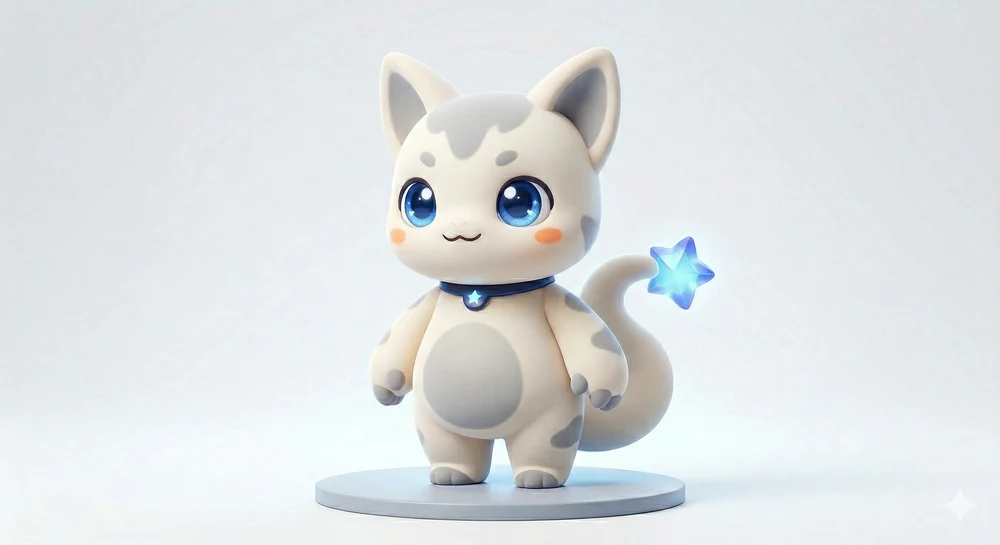

HELLO, I'M GNAR127
把好奇心，
做成好玩的东西。
一个和 AI 一起造东西的独立开发者。
做让人想玩的游戏，也做让日常轻松一点的工具。
逛逛我的作品 想到什么，就动手试试。
持续创作中 / MADE WITH CURIOSITY & AI
嗨，欢迎来玩！

这是 nebubu
我的吉祥物，也是创作搭子。
我的吉祥物，也是创作搭子。
THE THINGS I MAKE
一些认真做的小世界
从一个「如果可以呢」开始，
慢慢变成你可以打开的作品。
还会有下一个好点子。更多作品，正在慢慢长出来。
去 GitHub 看看进展ONE DEVELOPER & A LITTLE CAT
我是 gnar127，
旁边这位是 nebubu。
我喜欢把脑海里的小想法，变成能玩、能用的东西。AI 是我的创作伙伴，从第一行代码到一个新世界，我们一起把「试试看」变成现实。
nebubu 是这个创作空间里的吉祥物。一只温柔、好奇的小猫，陪我开发，也陪你发现下一个喜欢的作品。
在 GitHub 认识我MEET NEBUBU原版宣传片
一点温柔，一点好奇，还有很多想做的事。